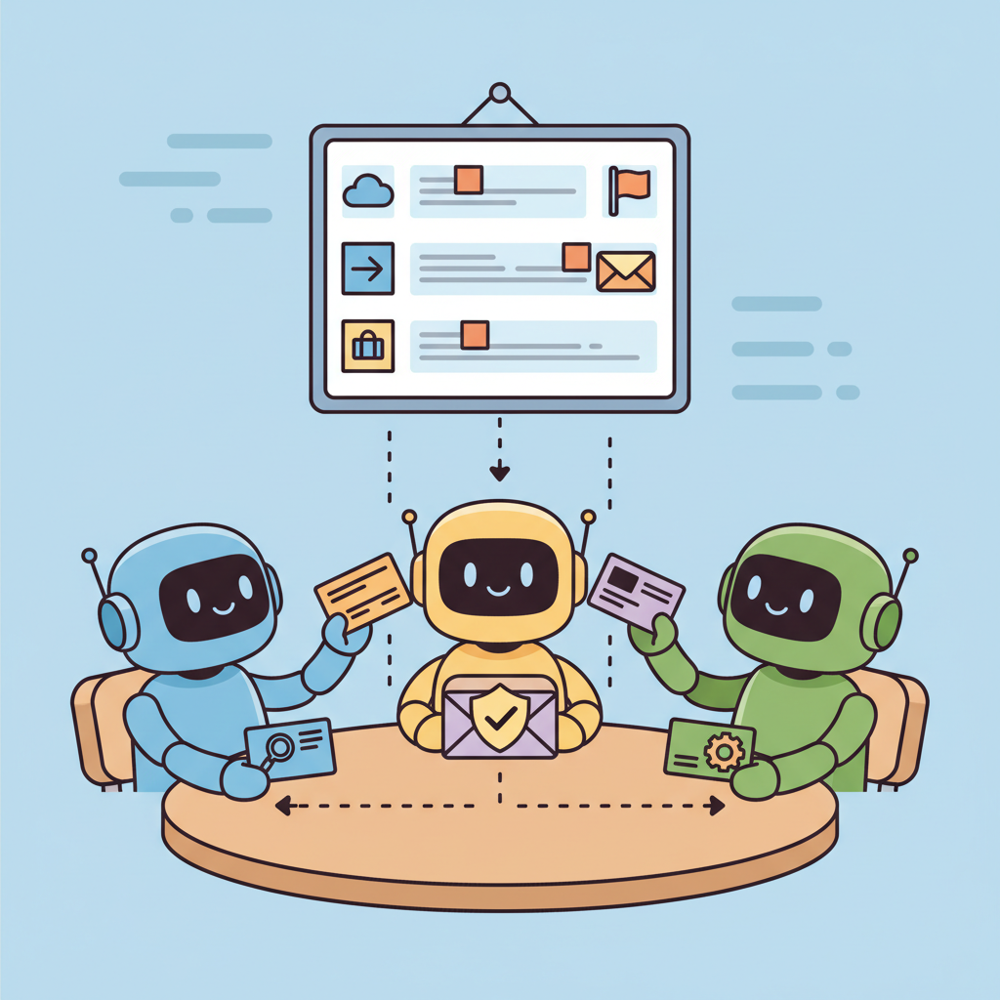

"Talking to yourself is fine. Talking to another agent requires a protocol."
Pip, Diplomatically Networked AI Agent
If MCP connects agents to tools, A2A connects agents to each other. Complex enterprise workflows span multiple systems, each managed by a different agent built by a different team. Without a standard protocol, integrating these agents requires brittle point-to-point connections. Google's Agent-to-Agent Protocol (A2A) provides a common language for agent discovery (Agent Cards), task delegation (Tasks), and structured communication (Messages), all built on standard HTTP and JSON-RPC. This section covers the protocol design, implementation patterns, and the relationship between A2A and MCP as complementary standards in the agentic ecosystem.
Prerequisites
This section builds on agent foundations from Chapter 22 and LLM API basics from Chapter 10.

23.3.1 The Agent-to-Agent Protocol
While MCP connects agents to tools and data sources, the Agent-to-Agent Protocol (A2A) connects agents to each other. Developed by Google and announced in April 2025, A2A defines a standard for how independently built agents discover each other's capabilities, negotiate task assignments, exchange intermediate results, and coordinate complex workflows. If MCP is USB for AI tools, A2A is the internet protocol for Section 22.1.
The need for A2A arises from the reality that complex enterprise workflows span multiple systems, each potentially managed by a different agent built by a different team using a different framework. A customer onboarding workflow might involve a document processing agent (built with LangGraph), a compliance checking agent (built with the OpenAI Agents SDK), and an account provisioning agent (a custom Python service). Without a standard protocol, integrating these agents requires brittle point-to-point connections. A2A provides the common language.
A2A is built on three core concepts: Agent Cards (JSON metadata files that describe an agent's capabilities, endpoint, and authentication requirements), Tasks (the unit of work exchanged between agents, with a defined lifecycle), and Messages (the communication medium within a task, supporting text, files, and structured data). The protocol uses standard HTTP/JSON-RPC, making it compatible with existing web infrastructure.
A2A and MCP are complementary, not competing, protocols. MCP connects agents to tools (agent-to-tool communication). A2A connects agents to other agents (agent-to-agent communication). A well-architected system uses both: individual agents use MCP to access their tools and data sources, and A2A to coordinate with other agents in multi-agent workflows. Think of MCP as the arms (how an agent interacts with the world) and A2A as the voice (how agents talk to each other).
Agent Cards
This snippet defines an A2A (Agent-to-Agent) agent card that advertises capabilities and endpoint information.
{
"name": "compliance-checker",
"description": "Validates documents against regulatory requirements for financial services. Supports KYC, AML, and SOX compliance checks.",
"url": "https://agents.example.com/compliance",
"version": "2.1.0",
"capabilities": {
"streaming": true,
"pushNotifications": false,
"stateTransitionHistory": true
},
"skills": [
{
"id": "kyc_check",
"name": "KYC Compliance Check",
"description": "Validates customer identity documents against Know Your Customer regulations. Accepts passport, drivers license, or national ID.",
"inputModes": ["text", "file"],
"outputModes": ["text"]
},
{
"id": "aml_screening",
"name": "AML Screening",
"description": "Screens individuals and entities against sanctions lists and PEP databases.",
"inputModes": ["text"],
"outputModes": ["text"]
}
],
"authentication": {
"type": "bearer",
"tokenUrl": "https://auth.example.com/token"
}
}23.3.2 Task Lifecycle
Every A2A interaction revolves around a Task. The client agent creates a task by sending a request to the server agent's endpoint. The task progresses through well-defined states: submitted, working, input-required (when the server agent needs more information), completed, failed, or canceled. This state machine provides clear visibility into where work stands and enables proper error handling at each transition.
The input-required state is particularly important for enterprise workflows. A compliance checking agent might need additional documents, or a clarification about which jurisdiction's regulations apply. Rather than failing or guessing, the agent signals that it needs input, the requesting agent (or a human) provides it, and processing resumes. This turn-based interaction model supports the kind of back-and-forth that complex real-world tasks require.
A2A supports both synchronous and streaming task execution. For quick operations (a lookup, a simple check), the client sends a request and receives a complete response. For long-running operations (document analysis, multi-step processing), the server streams progress updates and partial results. The client can monitor task state, cancel tasks that are taking too long, and handle timeouts gracefully. This flexibility accommodates the wide range of latencies inherent in agentic systems.
Who: An engineering director at a regional bank modernizing their mortgage application pipeline.
Situation: The bank had four separate teams responsible for intake, credit scoring, regulatory compliance, and underwriting. Each team had built its own AI agent using different frameworks (LangChain, PydanticAI, a custom Python service, and a Semantic Kernel agent on Azure).
Problem: Connecting these agents required point-to-point integrations with custom message formats. Every time one team updated their agent's API, the other teams' integrations broke. A single loan application touched all four agents, and failures were difficult to trace across the boundaries.
Decision: The team adopted A2A as the coordination protocol. Each agent published an Agent Card describing its capabilities. The Intake Agent created tasks for Credit and Compliance agents in parallel; when both completed, it forwarded combined results to the Underwriting Agent. The Compliance Agent could enter an input-required state when additional documents were needed, pausing the flow gracefully.
Result: Cross-team integration incidents dropped from 6 per month to fewer than 1. Average loan processing time fell from 48 hours to 14 hours because parallel agent execution replaced sequential handoffs.
Lesson: Standardized agent-to-agent protocols let independently maintained agents collaborate without shared code, turning organizational boundaries from friction points into clean interfaces.
23.3.3 Federation and Discovery
A2A includes mechanisms for agent discovery. Agent Cards can be published to registries where other agents can search for capabilities. A supervisory agent that needs "document processing" capabilities can query a registry, discover agents that offer those skills, evaluate their descriptions and authentication requirements, and dynamically route tasks to the most appropriate agent. This federation model enables ecosystems of agents that can collaborate without being pre-configured to know about each other.
Security in A2A follows standard web patterns: OAuth 2.0 for authentication, TLS for transport security, and capability-based access control defined in the Agent Card. The protocol also supports audit logging of all inter-agent communication, which is essential for compliance-sensitive industries where every decision and data exchange must be traceable.
A2A is still a relatively new protocol (announced April 2025) and the ecosystem is less mature than MCP's. While the specification is stable, production tooling, client libraries, and debugging tools are still evolving. For teams adopting A2A today, plan for additional integration testing and expect to contribute fixes and improvements back to the ecosystem. Start with internal agent-to-agent communication before exposing A2A endpoints externally.
Exercises
Describe the key components of Google's Agent-to-Agent (A2A) protocol. How does an A2A Agent Card enable discovery, and what information does it contain?
Answer Sketch
An Agent Card is a JSON document (served at /.well-known/agent.json) that describes the agent's capabilities, supported input/output types, and endpoint URL. It enables discovery by allowing other agents to fetch the card, understand what the agent can do, and decide whether to delegate tasks to it. It contains fields like name, description, skills, and authentication requirements.
Draw (or describe) the state transitions in an A2A task lifecycle. What states can a task be in, and what events trigger transitions between them?
Answer Sketch
States: submitted, working, input-required, completed, failed, canceled. Transitions: submitted to working (agent starts processing), working to input-required (agent needs more info from the caller), input-required to working (caller provides additional input), working to completed (task done), working to failed (unrecoverable error), any state to canceled (caller cancels).
Compare A2A and MCP. What problem does each protocol solve? Can they be used together, and if so, how?
Answer Sketch
MCP connects LLM applications to tools and data sources (model-to-tool). A2A connects agents to other agents (agent-to-agent). They are complementary: an agent might use MCP to access tools locally and A2A to delegate subtasks to specialized remote agents. An A2A agent could internally use MCP servers for its tool access.
Design a simple agent registry service in Python that stores Agent Cards and supports discovery queries. Implement register(card), search(skill_query), and get(agent_id) methods.
Answer Sketch
Use a dictionary keyed by agent_id. For search, iterate over stored cards and match the skill_query against each card's skills list using substring matching or embedding similarity. Return a ranked list of matching agents. In production, this would use a database with full-text search or vector similarity.
A task delegated via A2A fails because the remote agent encounters an error. Describe how the calling agent should handle this failure, considering the task lifecycle states.
Answer Sketch
The remote agent transitions the task to 'failed' state with an error message. The calling agent receives this status update and should: (1) log the failure with the remote agent's error details, (2) decide whether to retry with the same agent, (3) search for an alternative agent with the same skill, or (4) escalate to a human. The A2A protocol's task history preserves the full interaction for debugging.
Design tools so that calling them twice with the same parameters produces the same result without side effects. This lets you safely retry failed agent steps without worrying about duplicate actions (double-booking, double-charging, duplicate writes).
- A2A enables peer-to-peer agent communication, complementing MCP's agent-to-tool connections.
- Agent Cards provide capability discovery, letting agents find peers and understand what tasks they can handle.
- A2A supports asynchronous task delegation with status updates, enabling long-running multi-agent workflows.
Show Answer
A2A is a protocol for agents to communicate with each other as peers, enabling task delegation, status updates, and result exchange. While MCP connects agents to tools and data sources, A2A connects agents to other agents, enabling multi-agent collaboration without a centralized orchestrator.
Show Answer
An Agent Card is a JSON metadata document that describes an agent's capabilities, supported task types, authentication requirements, and endpoint URL. It serves as a discovery mechanism, allowing other agents to find and understand what a peer agent can do before delegating tasks.
What Comes Next
In the next section, Custom Tool Design, we cover how to build robust, production-quality tools with proper validation, error handling, and security boundaries.
References & Further Reading
Agent-to-Agent Communication
Google (2025). "Agent-to-Agent Protocol (A2A) Specification." google.github.io/A2A.
The official A2A specification defining how AI agents discover capabilities, negotiate tasks, and collaborate across organizational boundaries using Agent Cards and task lifecycle management.
Google (2025). "A2A: A New Era of Agent Interoperability." Google Developers Blog.
The launch announcement explaining how A2A complements MCP by enabling agent-to-agent collaboration rather than agent-to-tool connections.
Multi-Agent Communication Foundations
Early work on role-playing communication between AI agents, demonstrating how structured protocols enable cooperative task completion between autonomous agents.
Introduces structured communication protocols between software engineering agents using standardized operating procedures, demonstrating how message formats shape multi-agent collaboration quality.
FIPA (2002). "FIPA ACL Message Structure Specification." Foundation for Intelligent Physical Agents.
The classic agent communication language specification that influenced modern protocols like A2A, establishing foundational concepts of performatives, message structure, and interaction protocols.